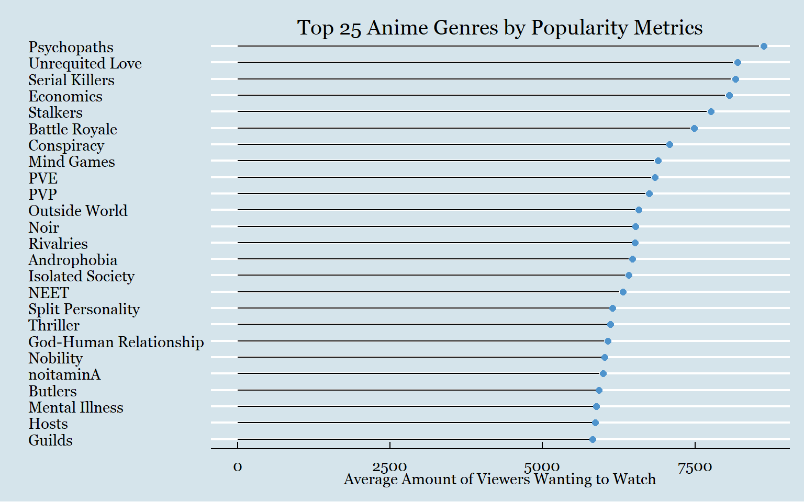
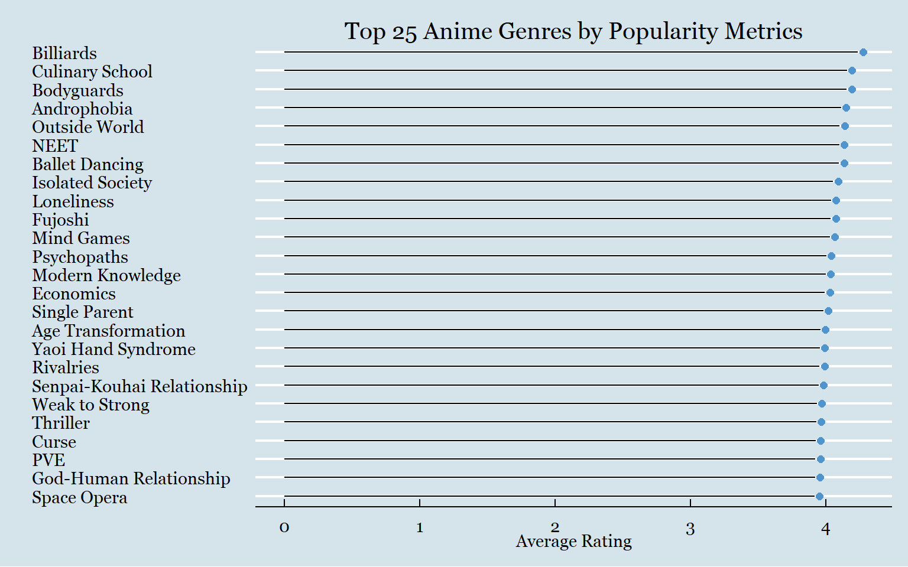
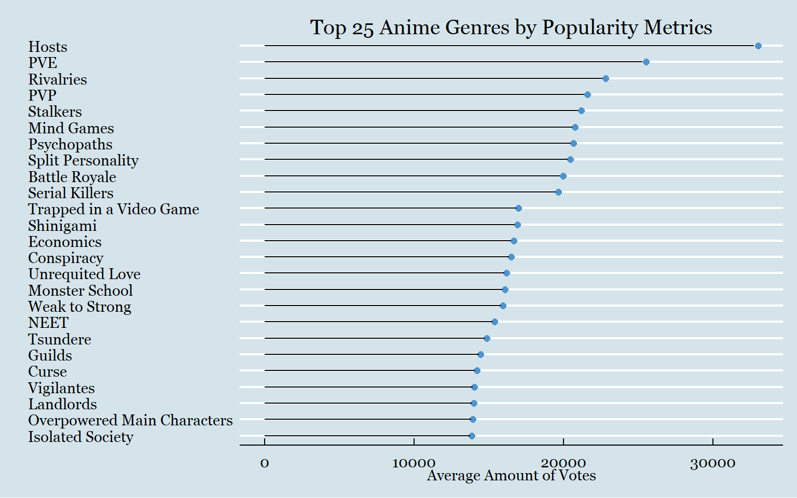

Understanding Anime Genre Trends
Motivation
The goal of this project was to practice string manipulation and creating shiny apps. The challenge with this data set was finding a way to take the individual genres and tags that were nested in the tags column and display each one’s popularity. Because this data was scraped from a popular anime website there were several ways to showcase popularity and preference for genres. What I do in this project is examine what popularity looks like in terms of demand (how frequently certain genres are made) over time, and how popularity looks like across several measures (amount of views, interest in watching the anime, ratings, and votes)
Questions
What genres/tags get the most attention or highest ratings?
Data Preparation
To start, I am going to be reading in the data.
setwd("C:/Users/laryl/Desktop/Data Sets")
big_anime <- read.csv("anime.csv")Next, I am going to do a quick inspection of the data types for the columns.
library(dplyr)
glimpse(big_anime)## Rows: 14,578
## Columns: 18
## $ title <chr> "Fullmetal Alchemist: Brotherhood", "your name.", "A S...
## $ mediaType <chr> "TV", "Movie", "Movie", "TV", "TV", "TV", "TV", "TV", ...
## $ eps <int> 64, 1, 1, 10, 10, 26, 25, 148, 1, 51, 13, 24, 25, 10, ...
## $ duration <int> NA, 107, 130, NA, NA, NA, NA, NA, 111, NA, NA, NA, NA,...
## $ ongoing <chr> "False", "False", "False", "False", "False", "False", ...
## $ startYr <int> 2009, 2016, 2016, 2016, 2019, 2019, 2015, 2011, 2013, ...
## $ finishYr <int> 2010, 2016, 2016, 2016, 2019, 2019, 2016, 2014, 2013, ...
## $ sznOfRelease <chr> "Spring", "", "", "Fall", "Spring", "Spring", "Fall", ...
## $ description <chr> "The foundation of alchemy is based on the law of equi...
## $ studios <chr> "['Bones']", "['CoMix Wave Films']", "['Kyoto Animatio...
## $ tags <chr> "['Action', 'Adventure', 'Drama', 'Fantasy', 'Mystery'...
## $ contentWarn <chr> "['Animal Abuse', 'Mature Themes', 'Violence', 'Domest...
## $ watched <int> 103707, 58831, 45892, 25134, 21308, 28708, 31329, 5019...
## $ watching <int> 14351, 1453, 946, 2183, 3217, 10844, 3861, 17730, 280,...
## $ wantWatch <int> 25810, 21733, 17148, 8082, 7864, 13156, 8664, 19219, 6...
## $ dropped <int> 2656, 124, 132, 167, 174, 600, 264, 2132, 150, 647, 21...
## $ rating <dbl> 4.702, 4.663, 4.661, 4.660, 4.650, 4.647, 4.639, 4.635...
## $ votes <int> 86547, 43960, 33752, 17422, 15789, 24765, 22819, 46853...class(big_anime$tags)## [1] "character"At this stage, we do have a significant issue. Every observation (anime) within the tag column contains all of the tags and genres associated with that observation. With the genres/tags being nested like this, it makes it very difficult to examine individual genres trends. The solution I came up with was to split the genres from their nested position and count each anime multiple times for every tag/genre it is associated with. For example. if an anime was associated with “Action” and “Fantasy,” then that anime would be counted twice.
library(stringr)
library(tidyverse)
big_anime_genres_split <- big_anime %>%
mutate(tags = str_remove_all(tags, fixed("'"))) %>%
mutate(tags = str_remove(tags, fixed("["))) %>%
mutate(tags = str_remove(tags, fixed("]"))) %>%
mutate(genres = str_split(tags, ", ")) %>%
unnest() %>%
distinct() The genre split was successful. To show proof of this I am going to display the first few observations using the Fullmetal Alchemist: Brotherhood anime series:
library(knitr)
first_observations <- big_anime_genres_split %>%
select(title, genres)%>%
head(10)
kable(first_observations)| title | genres |
|---|---|
| Fullmetal Alchemist: Brotherhood | Action |
| Fullmetal Alchemist: Brotherhood | Adventure |
| Fullmetal Alchemist: Brotherhood | Drama |
| Fullmetal Alchemist: Brotherhood | Fantasy |
| Fullmetal Alchemist: Brotherhood | Mystery |
| Fullmetal Alchemist: Brotherhood | Shounen |
| Fullmetal Alchemist: Brotherhood | Conspiracy |
| Fullmetal Alchemist: Brotherhood | Military |
| Fullmetal Alchemist: Brotherhood | Siblings |
| Fullmetal Alchemist: Brotherhood | Based on a Manga |
Next, we want to convert the character column to a factor column.
big_anime_genres_split$genres <-as.factor(big_anime_genres_split$genres)
str(big_anime_genres_split)## tibble [72,435 x 19] (S3: tbl_df/tbl/data.frame)
## $ title : chr [1:72435] "Fullmetal Alchemist: Brotherhood" "Fullmetal Alchemist: Brotherhood" "Fullmetal Alchemist: Brotherhood" "Fullmetal Alchemist: Brotherhood" ...
## $ mediaType : chr [1:72435] "TV" "TV" "TV" "TV" ...
## $ eps : int [1:72435] 64 64 64 64 64 64 64 64 64 64 ...
## $ duration : int [1:72435] NA NA NA NA NA NA NA NA NA NA ...
## $ ongoing : chr [1:72435] "False" "False" "False" "False" ...
## $ startYr : int [1:72435] 2009 2009 2009 2009 2009 2009 2009 2009 2009 2009 ...
## $ finishYr : int [1:72435] 2010 2010 2010 2010 2010 2010 2010 2010 2010 2010 ...
## $ sznOfRelease: chr [1:72435] "Spring" "Spring" "Spring" "Spring" ...
## $ description : chr [1:72435] "The foundation of alchemy is based on the law of equivalent exchange; you cannot produce something from nothing"| __truncated__ "The foundation of alchemy is based on the law of equivalent exchange; you cannot produce something from nothing"| __truncated__ "The foundation of alchemy is based on the law of equivalent exchange; you cannot produce something from nothing"| __truncated__ "The foundation of alchemy is based on the law of equivalent exchange; you cannot produce something from nothing"| __truncated__ ...
## $ studios : chr [1:72435] "['Bones']" "['Bones']" "['Bones']" "['Bones']" ...
## $ tags : chr [1:72435] "Action, Adventure, Drama, Fantasy, Mystery, Shounen, Conspiracy, Military, Siblings, Based on a Manga" "Action, Adventure, Drama, Fantasy, Mystery, Shounen, Conspiracy, Military, Siblings, Based on a Manga" "Action, Adventure, Drama, Fantasy, Mystery, Shounen, Conspiracy, Military, Siblings, Based on a Manga" "Action, Adventure, Drama, Fantasy, Mystery, Shounen, Conspiracy, Military, Siblings, Based on a Manga" ...
## $ contentWarn : chr [1:72435] "['Animal Abuse', 'Mature Themes', 'Violence', 'Domestic Abuse']" "['Animal Abuse', 'Mature Themes', 'Violence', 'Domestic Abuse']" "['Animal Abuse', 'Mature Themes', 'Violence', 'Domestic Abuse']" "['Animal Abuse', 'Mature Themes', 'Violence', 'Domestic Abuse']" ...
## $ watched : int [1:72435] 103707 103707 103707 103707 103707 103707 103707 103707 103707 103707 ...
## $ watching : int [1:72435] 14351 14351 14351 14351 14351 14351 14351 14351 14351 14351 ...
## $ wantWatch : int [1:72435] 25810 25810 25810 25810 25810 25810 25810 25810 25810 25810 ...
## $ dropped : int [1:72435] 2656 2656 2656 2656 2656 2656 2656 2656 2656 2656 ...
## $ rating : num [1:72435] 4.7 4.7 4.7 4.7 4.7 ...
## $ votes : int [1:72435] 86547 86547 86547 86547 86547 86547 86547 86547 86547 86547 ...
## $ genres : Factor w/ 495 levels "","\"Japan Animators Exhibition\"",..: 11 14 166 186 310 411 130 293 414 68 ...We also want to check to seeing if the conversion was successful.
levels(big_anime_genres_split$genres)## [1] "" "\"Japan Animators Exhibition\""
## [3] "\"Valentines Day\"" "15th Century"
## [5] "16th Century" "17th Century"
## [7] "18th Century" "19th Century"
## [9] "Abstract" "Acting"
## [11] "Action" "Adult Couples"
## [13] "Adult Industry" "Adventure"
## [15] "Africa" "Afterlife"
## [17] "Age Gap" "Age Transformation"
## [19] "Aging" "Agriculture"
## [21] "Alcohol" "Alice in Wonderland"
## [23] "Aliens" "All-Boys School"
## [25] "All-Girls School" "America"
## [27] "Amnesia" "Amusement Park"
## [29] "Ancient China" "Androids"
## [31] "Androphobia" "Angels"
## [33] "Animal Characteristics" "Animal Protagonists"
## [35] "Animal Transformation" "Anime Bancho"
## [37] "Anime Industry" "Anime no Chikara"
## [39] "Anime no Me" "Anime Tamago"
## [41] "Animeism" "Anthropomorphic"
## [43] "Apartment Life" "Apocalypse"
## [45] "Apprenticeship" "Archery"
## [47] "Arranged Marriage" "Art"
## [49] "Art School" "Assassins"
## [51] "Astronauts" "Astronomy"
## [53] "Australia" "Autobiographies"
## [55] "Aviation" "Badminton"
## [57] "Baking" "Ballet Dancing"
## [59] "Bar" "Baseball"
## [61] "Based on a 4-Koma Manga" "Based on a Card Game"
## [63] "Based on a Cartoon" "Based on a Comic Book"
## [65] "Based on a Doujinshi" "Based on a Fairy Tale"
## [67] "Based on a Light Novel" "Based on a Manga"
## [69] "Based on a Mobile Game" "Based on a Movie"
## [71] "Based on a Novel" "Based on a Picture Book"
## [73] "Based on a Religious Text" "Based on a Song"
## [75] "Based on a TV Series" "Based on a Video Game"
## [77] "Based on a Visual Novel" "Based on an Eroge"
## [79] "Based on an Otome Game" "Basketball"
## [81] "Battle Royale" "BDSM"
## [83] "Bears" "Billiards"
## [85] "Biographies" "Birds"
## [87] "BL" "Black and White"
## [89] "Blackmail" "Board Games"
## [91] "Boarding House" "Boarding School"
## [93] "Body Sharing" "Body Swapping"
## [95] "Bodyguards" "Bookstore"
## [97] "Borderline H" "Boss-Employee Relationship"
## [99] "Bounty Hunters" "Boxing"
## [101] "Breaking the Fourth Wall" "Brother Complex"
## [103] "Buddhism" "Butlers"
## [105] "Cafe" "Canada"
## [107] "Card Battles" "Cars"
## [109] "Cats" "Centaurs"
## [111] "CEOs" "CG Animation"
## [113] "Cheats" "Chibi"
## [115] "Childcare" "Childhood Friends"
## [117] "Childhood Promise" "Chinese Animation"
## [119] "Christianity" "Christmas"
## [121] "Circus" "Classical Music"
## [123] "Cohabitation" "Collections"
## [125] "College" "Combining Mecha"
## [127] "Comedy" "Coming of Age"
## [129] "Commercials" "Conspiracy"
## [131] "Contemporary Fantasy" "Convenience Store"
## [133] "Cooking" "Countryside"
## [135] "Coworkers" "Criminals"
## [137] "Crossdressing" "Crossover"
## [139] "Crude" "Culinary School"
## [141] "Cultivation" "Curse"
## [143] "Cyberpunk" "Cyborgs"
## [145] "Cycling" "Dancing"
## [147] "Dark Comedy" "Dark Fantasy"
## [149] "Deal with the Devil" "Debt"
## [151] "Delinquents" "Demon King"
## [153] "Demons" "Desert"
## [155] "Detectives" "Dinosaurs"
## [157] "Disability" "Disney"
## [159] "Divorce" "Doctors"
## [161] "Dodgeball" "Dogs"
## [163] "Doujinshi Industry" "Dragon Quest"
## [165] "Dragons" "Drama"
## [167] "Dream World" "Dungeon"
## [169] "Dystopia" "Earthquake"
## [171] "Ecchi" "Economics"
## [173] "Editors" "Educational"
## [175] "Egyptian Mythology" "Elemental Powers"
## [177] "Elves" "England"
## [179] "Environmental" "Episodic"
## [181] "Europe" "Explicit Violence"
## [183] "Fake Romance" "Family Friendly"
## [185] "Family Life" "Fantasy"
## [187] "Fashion" "Fated Lovers"
## [189] "Fetish" "Feudal Japan"
## [191] "Finland" "Firefighters"
## [193] "Fishing" "Flash Animation"
## [195] "Food and Beverage" "Food Protagonists"
## [197] "Football" "Forest"
## [199] "France" "French Revolution"
## [201] "Frogs" "Fujoshi"
## [203] "Ga-nime" "Gag"
## [205] "Gambling" "Gangs"
## [207] "Gender Bender" "Germany"
## [209] "Ghibli Museum Shorts" "Ghost Hunters"
## [211] "Ghosts" "GL"
## [213] "God-Human Relationship" "Gods"
## [215] "Golf" "Greece"
## [217] "Greek Mythology" "Guilds"
## [219] "Guns" "Gyaru"
## [221] "Gymnastics" "Gynophobia"
## [223] "Hacking" "Hamsters"
## [225] "Hand to Hand Combat" "Happy Science"
## [227] "Harem" "Heaven"
## [229] "Hell" "Henshin Heroes"
## [231] "High Stakes Games" "Historical"
## [233] "Horror" "Hosts"
## [235] "Hotels and Inns" "Human Experimentation"
## [237] "Ice Skating" "Idols"
## [239] "Illness" "Impersonation"
## [241] "India" "Inheritance"
## [243] "Insects" "Interspecies Relationship"
## [245] "Isekai" "Island"
## [247] "Isolated Society" "Italy"
## [249] "Iyashikei" "Japanese Anime Classic Collection"
## [251] "Japanese Mythology" "Josei"
## [253] "Journalism" "Journey to the West"
## [255] "Jungle" "Kaijuu"
## [257] "Kendo" "Kickboxing"
## [259] "Kidnapping" "Koalas"
## [261] "Korean Animation" "Landlords"
## [263] "Lawyers" "Leijiverse"
## [265] "LGBT Themes" "Library"
## [267] "Lifestyle Change" "Loneliness"
## [269] "Love Confession" "Love Triangle"
## [271] "Mafia" "Magic"
## [273] "Magic School" "Magical Girl"
## [275] "Mahjong" "Maids"
## [277] "Manga Industry" "Mansion"
## [279] "Married Life" "Martial Arts"
## [281] "Martial Arts School" "Marvel Comics"
## [283] "Master-Servant Relationship" "Mature Romance"
## [285] "Mecha" "Medical"
## [287] "Medieval" "Melancholy"
## [289] "Mental Illness" "Mercenaries"
## [291] "Mermaids" "Middle Eastern"
## [293] "Military" "Military School"
## [295] "Mind Games" "Minna no Uta"
## [297] "MMORPG" "Modelling"
## [299] "Modern Knowledge" "Monster-of-the-week"
## [301] "Monster Girls" "Monster School"
## [303] "Monsters" "Motorcycles"
## [305] "Mountain Climbing" "Music"
## [307] "Music School" "Mysterious Benefactor"
## [309] "Mysterious Shop" "Mystery"
## [311] "Natural Disaster" "NEET"
## [313] "Neighbors" "Newly Co-ed School"
## [315] "Ninja" "No Dialogue"
## [317] "Nobility" "Noir"
## [319] "noitaminA" "Non-Human Protagonists"
## [321] "Norse Mythology" "Novel Industry"
## [323] "Nurses" "Ocean"
## [325] "Opposites Attract" "Original Work"
## [327] "Orphans" "Otaku Culture"
## [329] "Outer Space" "Outside World"
## [331] "Overpowered Main Characters" "Pandas"
## [333] "Pandemic" "Panty Shots"
## [335] "Parody" "Person in a Strange World"
## [337] "Pets" "Photography"
## [339] "Picture Drama" "Pigs"
## [341] "Ping Pong" "Pirates"
## [343] "Play or Die" "Playboys"
## [345] "Police" "Political"
## [347] "Post-apocalyptic" "POV"
## [349] "Poverty" "Power Suits"
## [351] "Pregnancy" "Prehistoric"
## [353] "Prison" "Promotional"
## [355] "Prophecy" "Proxy Battles"
## [357] "Psychic Powers" "Psychological"
## [359] "Psychopaths" "PVE"
## [361] "PVP" "Rabbits"
## [363] "Racing" "Rakugo"
## [365] "Real Robot" "Rebellions"
## [367] "Recap" "Recipes"
## [369] "Reincarnation" "Religion"
## [371] "Remarriage" "Restaurants"
## [373] "Revenge" "Reverse Harem"
## [375] "Reverse Isekai" "Rivalries"
## [377] "Robots" "Rock Music"
## [379] "Romance" "Romance of the Three Kingdoms"
## [381] "Romantic Comedy" "Roommates"
## [383] "Royalty" "RPG"
## [385] "Rugby" "Running"
## [387] "Russia" "Salaryman"
## [389] "Samurai" "San-X Characters"
## [391] "Sanrio Characters" "Satire"
## [393] "School Club" "School Life"
## [395] "Sci Fi" "Scuba Diving"
## [397] "Secret Identity" "Seinen"
## [399] "Senpai-Kouhai Relationship" "Sentai"
## [401] "Sentient Mecha" "Serial Killers"
## [403] "Sexual Content" "Sherlock Holmes"
## [405] "Shinigami" "Ship"
## [407] "Short Episodes" "Shorts"
## [409] "Shoujo" "Shoujo-ai"
## [411] "Shounen" "Shounen-ai"
## [413] "Showbiz" "Siblings"
## [415] "Single Parent" "Sister Complex"
## [417] "Skeletons" "Slapstick"
## [419] "Slice of Life" "Slimes"
## [421] "Smut" "Soccer"
## [423] "Social Gap" "Social Media"
## [425] "Space Opera" "Space Pirates"
## [427] "Split Personality" "Sports"
## [429] "Stalkers" "Star-Crossed Lovers"
## [431] "Steampunk" "Stockholm Syndrome"
## [433] "Stop Motion Animation" "Student-Teacher Relationship"
## [435] "Student Council" "Submarine"
## [437] "Sudden Girlfriend Appearance" "Summoned Into Another World"
## [439] "Sumo Wrestling" "Super Robot"
## [441] "Superheroes" "Supernatural"
## [443] "Superpowers" "Survival"
## [445] "Swimming" "Switzerland"
## [447] "Swordplay" "Teaching"
## [449] "Tennis" "Terrorism"
## [451] "The Great Outdoors" "Thieves"
## [453] "Thriller" "Time Travel"
## [455] "Tokusatsu" "Tourism"
## [457] "Tournaments" "Track and Field"
## [459] "Trains" "Transfer Students"
## [461] "Transforming Mecha" "Trapped in a Video Game"
## [463] "Treasure Hunters" "Tsundere"
## [465] "Tutors" "Unrequited Love"
## [467] "Urban Fantasy" "Urban Legend"
## [469] "Vampires" "Video Game Industry"
## [471] "Vigilantes" "Virtual Reality"
## [473] "Vocaloid" "Voice Acting"
## [475] "Volleyball" "Voyeurism"
## [477] "War" "Weak to Strong"
## [479] "Werewolves" "Western"
## [481] "Witches" "Work Life"
## [483] "World Masterpiece Theater" "World War 2"
## [485] "Wrestling" "Writers"
## [487] "Wuxia" "Xianxia"
## [489] "Yakuza" "Yaoi"
## [491] "Yaoi Hand Syndrome" "Youkai"
## [493] "Yuri" "Zombies"
## [495] "Zoo"I noticed that one of the categories in genres was labeled as empty string, so we are going to eliminate it, taking care to remove it as possible factor.
big_anime_genres_split <- big_anime_genres_split %>%
filter(genres != "")%>%
droplevels()
levels(big_anime_genres_split$genres)## [1] "\"Japan Animators Exhibition\"" "\"Valentines Day\""
## [3] "15th Century" "16th Century"
## [5] "17th Century" "18th Century"
## [7] "19th Century" "Abstract"
## [9] "Acting" "Action"
## [11] "Adult Couples" "Adult Industry"
## [13] "Adventure" "Africa"
## [15] "Afterlife" "Age Gap"
## [17] "Age Transformation" "Aging"
## [19] "Agriculture" "Alcohol"
## [21] "Alice in Wonderland" "Aliens"
## [23] "All-Boys School" "All-Girls School"
## [25] "America" "Amnesia"
## [27] "Amusement Park" "Ancient China"
## [29] "Androids" "Androphobia"
## [31] "Angels" "Animal Characteristics"
## [33] "Animal Protagonists" "Animal Transformation"
## [35] "Anime Bancho" "Anime Industry"
## [37] "Anime no Chikara" "Anime no Me"
## [39] "Anime Tamago" "Animeism"
## [41] "Anthropomorphic" "Apartment Life"
## [43] "Apocalypse" "Apprenticeship"
## [45] "Archery" "Arranged Marriage"
## [47] "Art" "Art School"
## [49] "Assassins" "Astronauts"
## [51] "Astronomy" "Australia"
## [53] "Autobiographies" "Aviation"
## [55] "Badminton" "Baking"
## [57] "Ballet Dancing" "Bar"
## [59] "Baseball" "Based on a 4-Koma Manga"
## [61] "Based on a Card Game" "Based on a Cartoon"
## [63] "Based on a Comic Book" "Based on a Doujinshi"
## [65] "Based on a Fairy Tale" "Based on a Light Novel"
## [67] "Based on a Manga" "Based on a Mobile Game"
## [69] "Based on a Movie" "Based on a Novel"
## [71] "Based on a Picture Book" "Based on a Religious Text"
## [73] "Based on a Song" "Based on a TV Series"
## [75] "Based on a Video Game" "Based on a Visual Novel"
## [77] "Based on an Eroge" "Based on an Otome Game"
## [79] "Basketball" "Battle Royale"
## [81] "BDSM" "Bears"
## [83] "Billiards" "Biographies"
## [85] "Birds" "BL"
## [87] "Black and White" "Blackmail"
## [89] "Board Games" "Boarding House"
## [91] "Boarding School" "Body Sharing"
## [93] "Body Swapping" "Bodyguards"
## [95] "Bookstore" "Borderline H"
## [97] "Boss-Employee Relationship" "Bounty Hunters"
## [99] "Boxing" "Breaking the Fourth Wall"
## [101] "Brother Complex" "Buddhism"
## [103] "Butlers" "Cafe"
## [105] "Canada" "Card Battles"
## [107] "Cars" "Cats"
## [109] "Centaurs" "CEOs"
## [111] "CG Animation" "Cheats"
## [113] "Chibi" "Childcare"
## [115] "Childhood Friends" "Childhood Promise"
## [117] "Chinese Animation" "Christianity"
## [119] "Christmas" "Circus"
## [121] "Classical Music" "Cohabitation"
## [123] "Collections" "College"
## [125] "Combining Mecha" "Comedy"
## [127] "Coming of Age" "Commercials"
## [129] "Conspiracy" "Contemporary Fantasy"
## [131] "Convenience Store" "Cooking"
## [133] "Countryside" "Coworkers"
## [135] "Criminals" "Crossdressing"
## [137] "Crossover" "Crude"
## [139] "Culinary School" "Cultivation"
## [141] "Curse" "Cyberpunk"
## [143] "Cyborgs" "Cycling"
## [145] "Dancing" "Dark Comedy"
## [147] "Dark Fantasy" "Deal with the Devil"
## [149] "Debt" "Delinquents"
## [151] "Demon King" "Demons"
## [153] "Desert" "Detectives"
## [155] "Dinosaurs" "Disability"
## [157] "Disney" "Divorce"
## [159] "Doctors" "Dodgeball"
## [161] "Dogs" "Doujinshi Industry"
## [163] "Dragon Quest" "Dragons"
## [165] "Drama" "Dream World"
## [167] "Dungeon" "Dystopia"
## [169] "Earthquake" "Ecchi"
## [171] "Economics" "Editors"
## [173] "Educational" "Egyptian Mythology"
## [175] "Elemental Powers" "Elves"
## [177] "England" "Environmental"
## [179] "Episodic" "Europe"
## [181] "Explicit Violence" "Fake Romance"
## [183] "Family Friendly" "Family Life"
## [185] "Fantasy" "Fashion"
## [187] "Fated Lovers" "Fetish"
## [189] "Feudal Japan" "Finland"
## [191] "Firefighters" "Fishing"
## [193] "Flash Animation" "Food and Beverage"
## [195] "Food Protagonists" "Football"
## [197] "Forest" "France"
## [199] "French Revolution" "Frogs"
## [201] "Fujoshi" "Ga-nime"
## [203] "Gag" "Gambling"
## [205] "Gangs" "Gender Bender"
## [207] "Germany" "Ghibli Museum Shorts"
## [209] "Ghost Hunters" "Ghosts"
## [211] "GL" "God-Human Relationship"
## [213] "Gods" "Golf"
## [215] "Greece" "Greek Mythology"
## [217] "Guilds" "Guns"
## [219] "Gyaru" "Gymnastics"
## [221] "Gynophobia" "Hacking"
## [223] "Hamsters" "Hand to Hand Combat"
## [225] "Happy Science" "Harem"
## [227] "Heaven" "Hell"
## [229] "Henshin Heroes" "High Stakes Games"
## [231] "Historical" "Horror"
## [233] "Hosts" "Hotels and Inns"
## [235] "Human Experimentation" "Ice Skating"
## [237] "Idols" "Illness"
## [239] "Impersonation" "India"
## [241] "Inheritance" "Insects"
## [243] "Interspecies Relationship" "Isekai"
## [245] "Island" "Isolated Society"
## [247] "Italy" "Iyashikei"
## [249] "Japanese Anime Classic Collection" "Japanese Mythology"
## [251] "Josei" "Journalism"
## [253] "Journey to the West" "Jungle"
## [255] "Kaijuu" "Kendo"
## [257] "Kickboxing" "Kidnapping"
## [259] "Koalas" "Korean Animation"
## [261] "Landlords" "Lawyers"
## [263] "Leijiverse" "LGBT Themes"
## [265] "Library" "Lifestyle Change"
## [267] "Loneliness" "Love Confession"
## [269] "Love Triangle" "Mafia"
## [271] "Magic" "Magic School"
## [273] "Magical Girl" "Mahjong"
## [275] "Maids" "Manga Industry"
## [277] "Mansion" "Married Life"
## [279] "Martial Arts" "Martial Arts School"
## [281] "Marvel Comics" "Master-Servant Relationship"
## [283] "Mature Romance" "Mecha"
## [285] "Medical" "Medieval"
## [287] "Melancholy" "Mental Illness"
## [289] "Mercenaries" "Mermaids"
## [291] "Middle Eastern" "Military"
## [293] "Military School" "Mind Games"
## [295] "Minna no Uta" "MMORPG"
## [297] "Modelling" "Modern Knowledge"
## [299] "Monster-of-the-week" "Monster Girls"
## [301] "Monster School" "Monsters"
## [303] "Motorcycles" "Mountain Climbing"
## [305] "Music" "Music School"
## [307] "Mysterious Benefactor" "Mysterious Shop"
## [309] "Mystery" "Natural Disaster"
## [311] "NEET" "Neighbors"
## [313] "Newly Co-ed School" "Ninja"
## [315] "No Dialogue" "Nobility"
## [317] "Noir" "noitaminA"
## [319] "Non-Human Protagonists" "Norse Mythology"
## [321] "Novel Industry" "Nurses"
## [323] "Ocean" "Opposites Attract"
## [325] "Original Work" "Orphans"
## [327] "Otaku Culture" "Outer Space"
## [329] "Outside World" "Overpowered Main Characters"
## [331] "Pandas" "Pandemic"
## [333] "Panty Shots" "Parody"
## [335] "Person in a Strange World" "Pets"
## [337] "Photography" "Picture Drama"
## [339] "Pigs" "Ping Pong"
## [341] "Pirates" "Play or Die"
## [343] "Playboys" "Police"
## [345] "Political" "Post-apocalyptic"
## [347] "POV" "Poverty"
## [349] "Power Suits" "Pregnancy"
## [351] "Prehistoric" "Prison"
## [353] "Promotional" "Prophecy"
## [355] "Proxy Battles" "Psychic Powers"
## [357] "Psychological" "Psychopaths"
## [359] "PVE" "PVP"
## [361] "Rabbits" "Racing"
## [363] "Rakugo" "Real Robot"
## [365] "Rebellions" "Recap"
## [367] "Recipes" "Reincarnation"
## [369] "Religion" "Remarriage"
## [371] "Restaurants" "Revenge"
## [373] "Reverse Harem" "Reverse Isekai"
## [375] "Rivalries" "Robots"
## [377] "Rock Music" "Romance"
## [379] "Romance of the Three Kingdoms" "Romantic Comedy"
## [381] "Roommates" "Royalty"
## [383] "RPG" "Rugby"
## [385] "Running" "Russia"
## [387] "Salaryman" "Samurai"
## [389] "San-X Characters" "Sanrio Characters"
## [391] "Satire" "School Club"
## [393] "School Life" "Sci Fi"
## [395] "Scuba Diving" "Secret Identity"
## [397] "Seinen" "Senpai-Kouhai Relationship"
## [399] "Sentai" "Sentient Mecha"
## [401] "Serial Killers" "Sexual Content"
## [403] "Sherlock Holmes" "Shinigami"
## [405] "Ship" "Short Episodes"
## [407] "Shorts" "Shoujo"
## [409] "Shoujo-ai" "Shounen"
## [411] "Shounen-ai" "Showbiz"
## [413] "Siblings" "Single Parent"
## [415] "Sister Complex" "Skeletons"
## [417] "Slapstick" "Slice of Life"
## [419] "Slimes" "Smut"
## [421] "Soccer" "Social Gap"
## [423] "Social Media" "Space Opera"
## [425] "Space Pirates" "Split Personality"
## [427] "Sports" "Stalkers"
## [429] "Star-Crossed Lovers" "Steampunk"
## [431] "Stockholm Syndrome" "Stop Motion Animation"
## [433] "Student-Teacher Relationship" "Student Council"
## [435] "Submarine" "Sudden Girlfriend Appearance"
## [437] "Summoned Into Another World" "Sumo Wrestling"
## [439] "Super Robot" "Superheroes"
## [441] "Supernatural" "Superpowers"
## [443] "Survival" "Swimming"
## [445] "Switzerland" "Swordplay"
## [447] "Teaching" "Tennis"
## [449] "Terrorism" "The Great Outdoors"
## [451] "Thieves" "Thriller"
## [453] "Time Travel" "Tokusatsu"
## [455] "Tourism" "Tournaments"
## [457] "Track and Field" "Trains"
## [459] "Transfer Students" "Transforming Mecha"
## [461] "Trapped in a Video Game" "Treasure Hunters"
## [463] "Tsundere" "Tutors"
## [465] "Unrequited Love" "Urban Fantasy"
## [467] "Urban Legend" "Vampires"
## [469] "Video Game Industry" "Vigilantes"
## [471] "Virtual Reality" "Vocaloid"
## [473] "Voice Acting" "Volleyball"
## [475] "Voyeurism" "War"
## [477] "Weak to Strong" "Werewolves"
## [479] "Western" "Witches"
## [481] "Work Life" "World Masterpiece Theater"
## [483] "World War 2" "Wrestling"
## [485] "Writers" "Wuxia"
## [487] "Xianxia" "Yakuza"
## [489] "Yaoi" "Yaoi Hand Syndrome"
## [491] "Youkai" "Yuri"
## [493] "Zombies" "Zoo"Visualization
We can now see how all of this data can be visualized. At this point, we are going to create a bar plot that measures the overall amount of anime produced per genre.
library(ggplot2)
library(ggthemes)
library(extrafont)
theme_cerulean <- function (){
theme_economist() +
theme(legend.position = "none",
text = element_text(family = "Georgia"),
panel.grid.major.x = element_blank(),
plot.title = element_text(size = 20,hjust = 0.5),
plot.subtitle = element_text(size = 8, color = "darkslategrey", margin = margin(b =10), hjust = 0.5))
}
big_anime_genres_plot <- big_anime_genres_split %>%
count(genres) %>%
top_n(25, n) %>%
ggplot(aes(x = reorder(genres, n) , y = n))+
geom_col(fill= "steelblue3") +
labs(y = "Number of Animes Produced",
x = "Genres")+
theme_cerulean() +
theme(axis.text.x = element_text(angle = 90,
hjust = 1))
big_anime_genres_plot
Overall, it looks like viewers have a strong preference for comedic, manga-based, and action anime. None of this is too surprising. But have genre demand changed over the years. This gives us an opportunity to use shiny to see how anime genres have trended over time.
Let’s first make the data frame by grouping anime genres and the year they were produced together so that they can be counted.
big_anime_genres_split_count <- big_anime_genres_split %>%
group_by(genres, startYr) %>%
count(genres) %>%
filter( !is.na(startYr)) Visualizing time!
library(shiny)
library(shinythemes)
ui <-fluidPage(
titlePanel("Anime Genres Over The Years"),
theme = shinythemes::shinytheme("cosmo"),
sidebarLayout(
sidebarPanel(
sliderInput('year','Select Year', value = 2000, min= 1907 , max= 2026 )),
mainPanel(
tabsetPanel(
tabPanel('Plot', plotly::plotlyOutput('plot_top25')),
tabPanel('Table', DT::DTOutput('table_top25'))
)
)
)
)
server <- function(input, output, session ){
tops <- function() {
big_anime_genres_split_count %>%
filter(startYr == input$year) %>%
ungroup()%>%
top_n(25, n) %>%
ggplot(aes(x = reorder(genres, n) , y = n))+
geom_col(fill= "steelblue3") +
labs(y = "Number of Animes Produced",
x = "Genres")+
theme_cerulean() +
theme(axis.text.x = element_text(angle = 90,
hjust = 1))
}
output$plot_top25 <- plotly::renderPlotly({
tops()
})
output$table_top25 <- DT::renderDT({
big_anime_genres_split_count %>%
filter(startYr == input$year) %>%
ungroup()%>%
top_n(25, n)
})
}
shinyApp(ui = ui, server = server)Using this plot there are many trends that could be more thoroughly analyzed. What drew my attention immediately was the demand for fantasy anime which has been steadily increasing since 2010. Although I do not watch as many anime as used to, I can attest to the fantasy genre growth trend because I was one of the those viewers who watched a lot of fantasy anime back in the early to mid 2010s.
Now that we have examined the frequency of genres overall and based on time. I now want to analyze genre popularity based on viewer opinions. The 4 attributes in the data set I felt like gave the most comprehensive picture of popularity were the amount of views(watched), interest in watching(wantWatch), rating, and amount of votes(votes). To compare the genres I will produce a data frame where I take the mean of all of these metrics by genres.
big_anime_genres_split_pop <- big_anime_genres_split %>%
group_by(genres)%>%
summarize(avg_watched = mean(watched, na.rm = TRUE),
avg_want = mean(wantWatch, na.rm = TRUE ),
avg_rating =mean(rating, na.rm = TRUE),
avg_votes =mean(votes, na.rm = TRUE) )I want to then take the top 25 genres for each metric.
big_anime_genres_split_watch <- big_anime_genres_split_pop %>%
top_n(25, avg_watched)
big_anime_genres_split_want <- big_anime_genres_split_pop %>%
top_n(25, avg_want)
big_anime_genres_split_rating <- big_anime_genres_split_pop %>%
top_n(25, avg_rating)
big_anime_genres_split_votes <- big_anime_genres_split_pop %>%
top_n(25, avg_votes)Now we are going to plot them all using Cleveland Dot Plots (or lollipop graphs).
plotter<- function (x, y, d) {
ggplot(d,
aes(x = x,
y = reorder(y, x)))+
geom_point(size = 2,
color = "steelblue3")+
geom_segment(aes(x= 0,
xend = x - x*.0090,
y = reorder(y, x),
yend = reorder(y, x)),
color = "black")+
theme_minimal()+
theme_cerulean() +
theme(text = element_text(family = "Georgia"),
plot.title = element_text(size = 15, margin(b = 10), family = "Georgia"),
panel.grid.minor = element_blank(),
panel.grid.major.x = element_blank())
}
pop_plot1<-plotter(big_anime_genres_split_watch$avg_watched, big_anime_genres_split_watch$genres, big_anime_genres_split_watch)+
labs(title = "Top 25 Anime Genres by Popularity Metrics", y = "", x = "Average Amount of Views")
pop_plot2<-plotter(big_anime_genres_split_want$avg_want, big_anime_genres_split_want$genres, big_anime_genres_split_want)+
labs(title = "Top 25 Anime Genres by Popularity Metrics", y = "", x = "Average Amount of Viewers Wanting to Watch")
pop_plot3<-plotter(big_anime_genres_split_rating$avg_rating, big_anime_genres_split_rating$genres, big_anime_genres_split_rating)+
labs(title = "Top 25 Anime Genres by Popularity Metrics", y = "", x = "Average Rating")
pop_plot4<-plotter(big_anime_genres_split_votes$avg_votes, big_anime_genres_split_votes$genres, big_anime_genres_split_votes)+
labs(title = "Top 25 Anime Genres by Popularity Metrics", y = "", x = "Average Amount of Votes")pop_plot1 
pop_plot2 
pop_plot3 
pop_plot4  So these results are interesting because in our earlier plots, we were seeing genres be the most popular. But these last 4 graphs show that viewers are more likely to rate tags more highly. Where we draw the line between tags and genres is up for debate. Because of the limitations of this project, this is as far as it is going to go.
Conclusion
I think this project cemented for me the fact that whenever a broad question is asked, time needs to be taken to carefully examine all of the metrics that could be used to answer the question. For this project, once the data was curated, there were many ways to evaluate genre popularity. I think this exploratory analysis went well, and this analysis definitely gives me some more ideas for future projects using this data set.
Source
This dataset was provided by Kaggle user Alan Mathew: https://www.kaggle.com/alancmathew/anime-dataset